目次
- 魚介・肉
- 野菜・フルーツ
- ソウルフード
魚介・肉
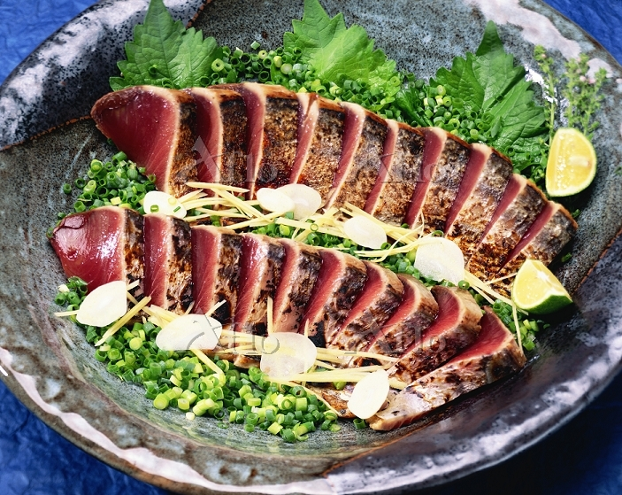
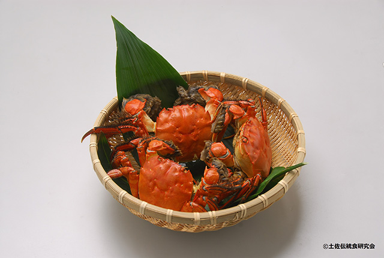
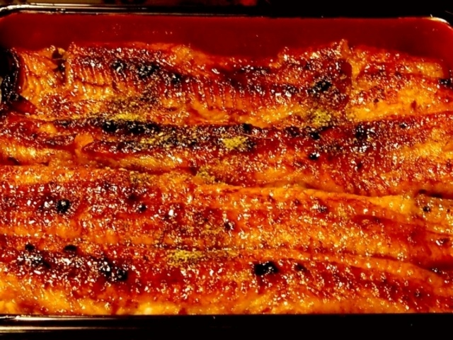
肉類
- 土佐あかうし
- 四万十ポーク
- 土佐はちきん地鶏
- 土佐ジロー
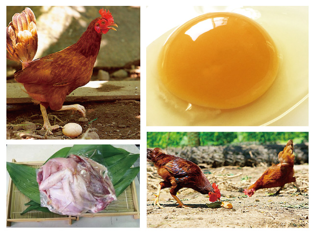
野菜・フルーツ
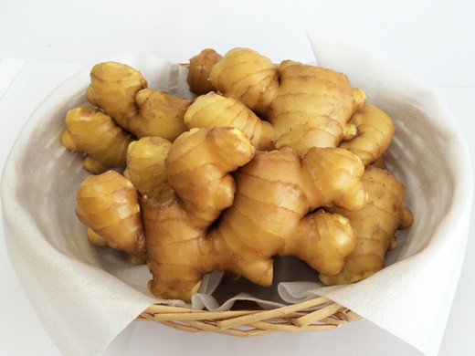
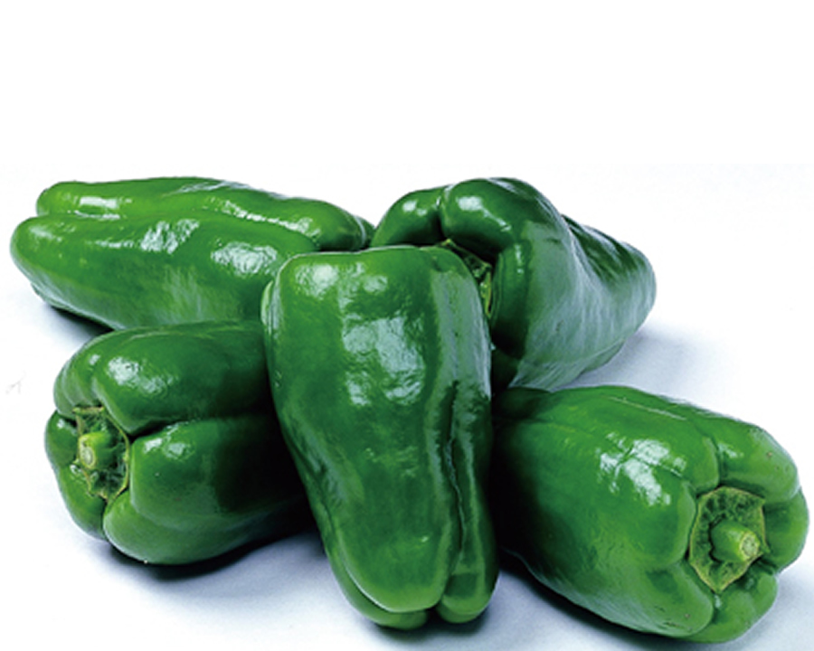
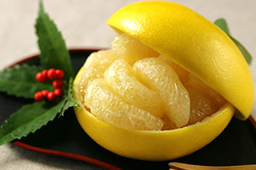
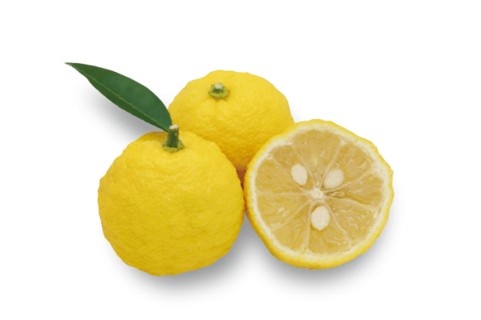
おすすめソウルフード
- ぼうしパン
- かわいい帽子の形に似た高知のご当地パンです。
- もともとはメロンパンを作ろうとして偶然できた一品。
- 表面はほんのり甘くてサクサクした食感！
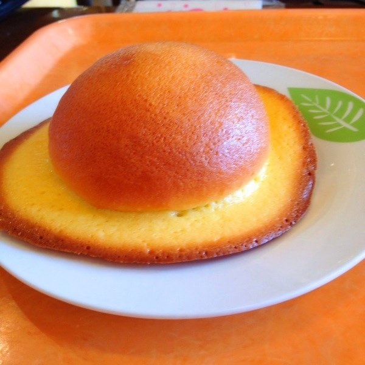
- 味噌カツラーメン
- 味噌ラーメンにとんかつがのったラーメンです。
- 一度食べてみると相性の良さに驚くほど美味しいです！
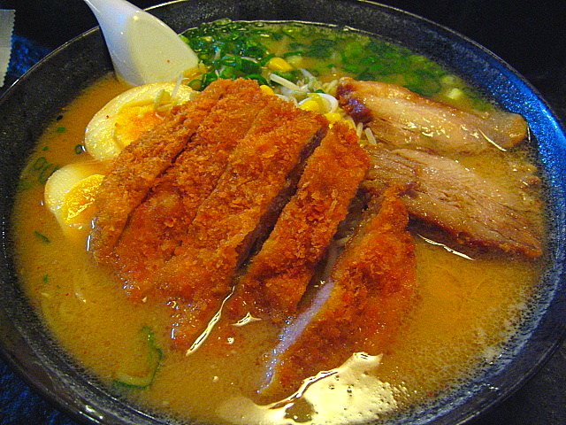
- ミレービスケット
- 昭和30年頃からスタートし、90年ずっと引き継がれている伝統のお菓子。
- 豆を挙げた油をブレンドしているため、独特の香ばしさがある商品。
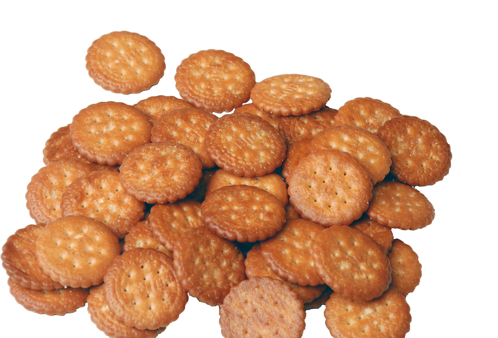
- 芋けんぴ
- サツマイモをカリッと油で揚げて、砂糖をからめただけのシンプルなお菓子。
- 県内でも有名なのが「芋屋 金次郎」。
- 四国県内に直営ショップがあるほどの人気で、本店では様々な味わいの芋けんぴが味わえます！
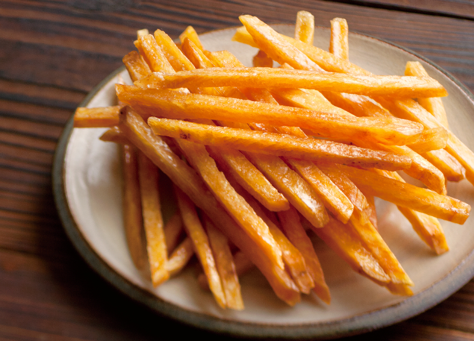
- アイスクリン
- 見た目も名前もアイスクリームとほとんど同じですが、実はかき氷の一種。
- 高知県内の混交スポットのあちこちに出店があり、小さなパラソルの下で売られています。
- シャリシャリした食感と、ほどよい甘みとくちどけに人気が集まる一品！
ページトップに戻る